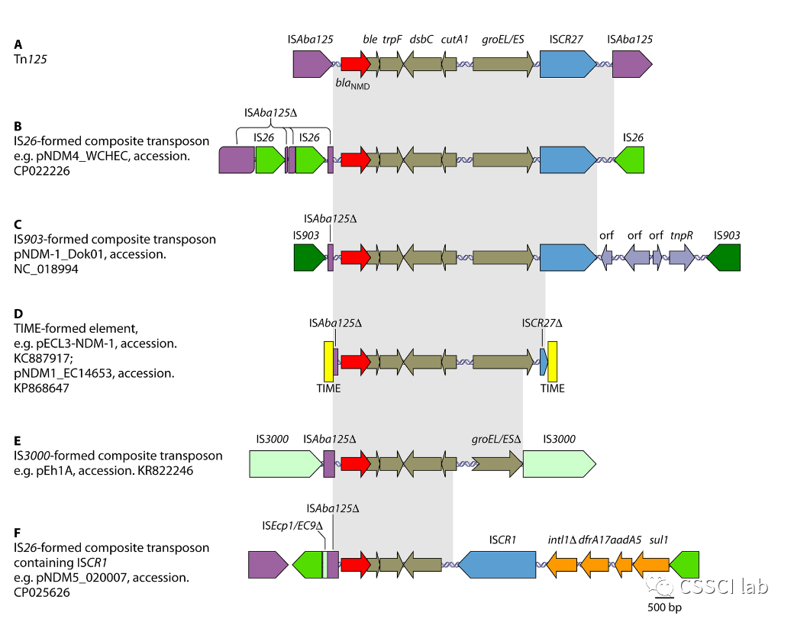

PncA 双突变导致吡嗪酰胺耐药的分子机制
比较野生型与 V128G、Y95R 突变体系，分析结构稳定性、活性中心、底物结合和质子传递网络。
WORK / PUBLIC RECORD
项目从尚未回答的问题开始；论文把方法、证据和结论置于公开检验之下。


CURRENT PROJECTS
状态以团队最新信息为准。
比较野生型与 V128G、Y95R 突变体系，分析结构稳定性、活性中心、底物结合和质子传递网络。
模拟 Gabija 防御系统核心复合物的开放过程，寻找推动大尺度结构变化的关键因素。
探索突变如何影响转录暂停相关蛋白，并把原子尺度变化与疾病机制联系起来。
结合核心基因组、移动遗传元件、系统发育和共线性分析，追踪毒力特征的形成与传播。
构建工程乳酸杆菌，在肠道内定向清除 Colibactin，从 DNA 损伤路径上游进行干预。
建立表达体系、优化诱导条件、完成 Ni-NTA 亲和纯化并研究催化功能。
STUDENT-LED PROJECTS
负责人：管文仪 · 指导教师：赵祖国
负责人：梁露光 · 指导教师：赵祖国
负责人：卢宇洋 · 指导教师：郭文涛
负责人：梁露光 · 指导教师：赵祖国
PUBLICATIONS
2020–2026 年记录
MICROBIAL DRUG RESISTANCE
JOURNAL OF PHARMACEUTICAL AND BIOMEDICAL ANALYSIS · VOL. 270 · 117272
BMC MICROBIOLOGY · VOL. 26 · NO. 1 · 219
ACS OMEGA · VOL. 11 · NO. 3 · 4175–4187
JOURNAL OF AGRICULTURAL AND FOOD CHEMISTRY · VOL. 73 · NO. 4 · 2451–2460
ANTIVIRAL THERAPY · NO. 3 · 13596535241259952
FRONTIERS IN CELLULAR AND INFECTION MICROBIOLOGY · VOL. 14 · 1345935
BMC INFECTIOUS DISEASES · VOL. 24 · NO. 1 · 188
NATURAL PRODUCT COMMUNICATIONS · VOL. 19 · NO. 10 · 1934578X241288428
ECOTOXICOLOGY AND ENVIRONMENTAL SAFETY · VOL. 274 · 116147
JOURNAL OF MOLECULAR GRAPHICS & MODELLING · VOL. 126 · 108623
MICROBIOME · VOL. 12 · NO. 1 · 80
NEW MICROBIOLOGICA · VOL. 46 · NO. 2 · 186
MICROBIAL DRUG RESISTANCE · NO. 12 · 541–551
PLOS COMPUTATIONAL BIOLOGY · VOL. 18 · NO. 7 · e1010343
MICROBIAL DRUG RESISTANCE · VOL. 28 · NO. 8 · 853–860
FRONTIERS IN PHARMACOLOGY · VOL. 11 · 592238
MICROBIAL DRUG RESISTANCE · VOL. 27 · NO. 10 · 1405–1411
JOURNAL OF CELLULAR AND MOLECULAR MEDICINE · VOL. 24 · NO. 15 · 8763–8771
VIRUS RESEARCH · VOL. 285 · 197988
JOURNAL OF GLOBAL ANTIMICROBIAL RESISTANCE · VOL. 20 · 204–208
JOURNAL OF GLOBAL ANTIMICROBIAL RESISTANCE · VOL. 17 · 84–89
PHYSICAL CHEMISTRY CHEMICAL PHYSICS · VOL. 20 · NO. 9 · 6409–6420
EXPERIMENTAL AND THERAPEUTIC MEDICINE · VOL. 11 · 269–276
INDIAN JOURNAL OF MEDICAL MICROBIOLOGY · VOL. 33 · S87–S92
THE JOURNAL OF MICROBIOLOGY · VOL. 51 · NO. 2 · 207–212
BIOTECHNOLOGY AND BIOPROCESS ENGINEERING · VOL. 18 · NO. 2 · 406–412
ACHIEVEMENTS
以下统计截至 2023 年公开招新资料发布时。
2021 年获校级二等奖、华南赛区优秀奖；2023 年获校级二等奖、华南赛区二等奖、全国总决赛铜奖。